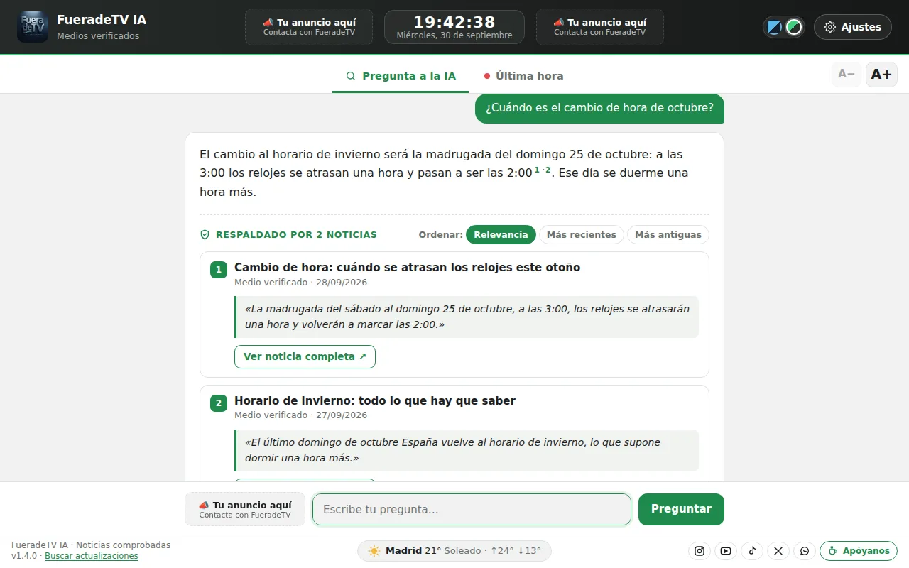
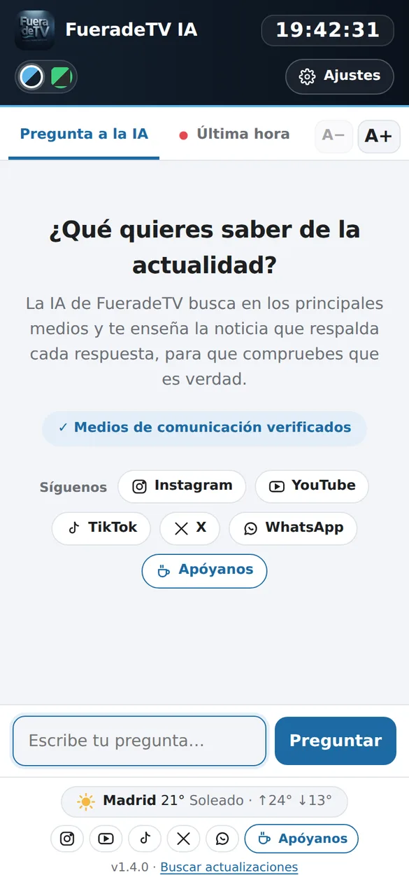
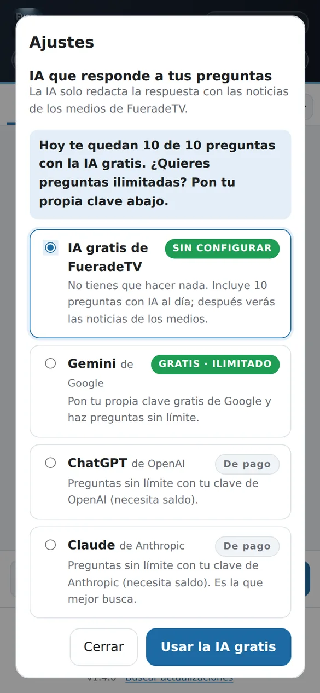

Windows
Para Windows 10 y 11. Desde Microsoft Store se instala sin avisos y se actualiza sola.
 Descarga directa · servidor externo
Descarga directa · servidor externo
La IA de FueradeTV responde a tus preguntas de actualidad usando solo noticias de medios de comunicación verificados, y te muestra la frase exacta de la noticia para que compruebes que es verdad.
Nada de respuestas inventadas. Si la IA no encuentra la noticia que lo respalda, te lo dice. Y cuando la encuentra, puedes abrirla y leerla entera en el medio original.
«La madrugada del domingo 25 de octubre, a las 3:00, los relojes se atrasarán una hora y volverán a marcar las 2:00.»
Ejemplo de cómo se ve una respuesta en la app.
Elige tu dispositivo. Incluye preguntas con IA gratis cada día y las noticias de última hora sin límite.
Para Windows 10 y 11. Desde Microsoft Store se instala sin avisos y se actualiza sola.
Descarga directa · servidor externo
Para móviles y tablets con Android 7 o superior.
Google Play: muy prontoPara Mac con chip Apple o Intel, con macOS 11 o superior.
Descarga directa · servidor externo Mac App Store: muy prontoEstamos preparando la versión para iPhone y iPad. Muy pronto en la App Store.
App Store: muy prontoSobre cualquier tema de actualidad, como lo preguntarías a un amigo. Las noticias pueden ser de hoy o de hace años.
La app busca solo en una selección de medios de comunicación verificados y lee las noticias que hablan de ello.
Recibes una respuesta clara y, debajo, la frase exacta de cada noticia y el enlace para leerla completa.
En menos de 20 segundos: cómo se pregunta, cómo responde y cómo te enseña la noticia que lo demuestra.



Llega a los seguidores de FueradeTV cada vez que abren la app para informarse. Escríbenos y te contamos los espacios disponibles.